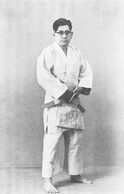

Kōri Hisataka was a highly influential Japanese karate master, best known as the founder of Shōrinji-ryū Kenkōkan Karatedō and as one of the earliest figures to systematize protective equipment (bōgu) for full-contact karate training.
Hisataka is significant as a bridge between prewar Okinawan karate, Japanese budō modernization, and postwar global karate.